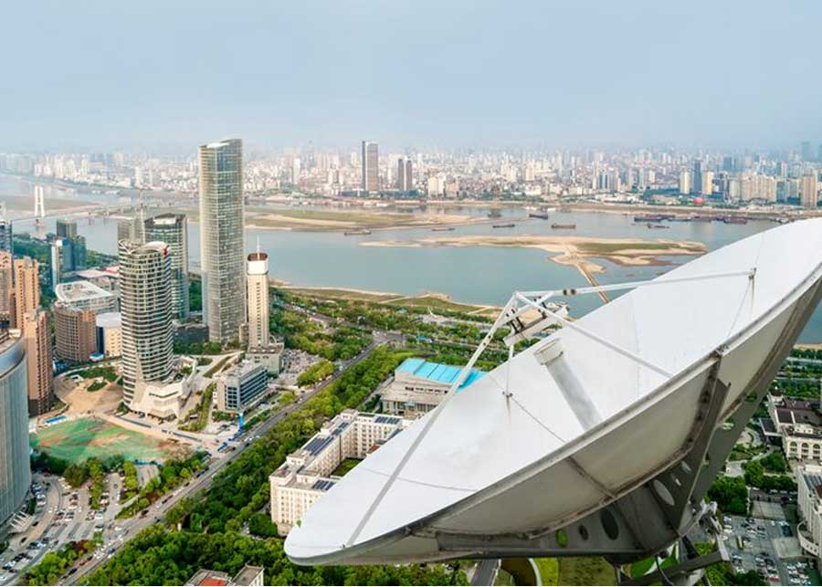

أنظمة التلفزيون الهوائي المركزي (MATV) من شركة مجال لشبكات تقنية المعلومات والأمن
في المباني التجارية الحديثة، والمجمعات السكنية، والفنادق، والمنشآت الصحية اليوم، لم يعد توزيع البث التلفزيوني عالي الجودة والموثوق مجرد رفاهية—بل أصبح متطلباً أساسياً. تلعب أنظمة التلفزيون الهوائي المركزي (MATV) دوراً محورياً في ضمان نقاء الإشارة وتوصيل محتوى عالي الدقة إلى مئات أو آلاف نقاط المشاهدة من خلال محطة استقبال مركزية واحدة. وتعد شركة مجال لشبكات تقنية المعلومات والأمن رائدة في تصميم وتوريد وتركيب وصيانة بنى أنظمة MATV القوية في جميع أنحاء المملكة العربية السعودية، مما يضمن حصول كل شاشة على بث تلفزيوني وفضائي نقي ومثالي.
تم تصميم حلول MATV الهندسية لدينا لدمج مصادر الإشارات المتعددة، بما في ذلك التلفزيون الرقمي الأرضي (DVB-T/T2)، وتلفزيون الأقمار الصناعية (DVB-S/S2)، وقنوات الفيديو المحلية، ضمن شبكة توزيع موحدة وفعالة. ومن خلال الاعتماد على أحدث المعدات العالمية مثل الهوائيات عالية الكسب، وأطباق الأقمار الصناعية، ومحولات خفض الضوضاء (LNBs)، والمفاتيح المتعددة المتطورة (Multiswitches)، ومكبرات الصوت، والكابلات متحدة المحور أو كابلات الألياف البصرية عالية الحماية، نقضي تماماً على تدهور الإشارة والتداخل الكهرومغناطيسي الخارجي. وهذا يضمن احتفاظ كل منفذ بنسب إشارة إلى ضوضاء مثالية ومستويات ديسيبل متوازنة، بغض النظر عن المسافة من محطة التوزيع المركزية.
القدرات الأساسية لأنظمة MATV من شركة مجال
نقدم خدمات هندسية مخصصة ومصممة وفقاً للمساحات والمخططات المعمارية الخاصة بكل منشأة، مما يضمن تغطية سلسة وتوافقاً تاماً مع جميع أنواع الشاشات وأجهزة فك التشفير الرئيسية. تشمل قدراتنا:
=======MATV (Master Antenna Television) Systems in Majal IT Networks & Security
In today’s modern commercial buildings, residential complexes, hotels, and healthcare facilities, reliable and high-quality television distribution is no longer a luxury—it is an essential requirement. Master Antenna Television (MATV) systems play a central role in delivering signal clarity and high-definition content to hundreds or thousands of viewing points from a single central headend. Majal IT Networks & Security is at the forefront of designing, supplying, installing, and maintaining robust MATV architectures across Saudi Arabia, ensuring that every screen receives flawless broadcast and satellite signals.
Our MATV solutions are engineered to consolidate multiple signal sources, including digital terrestrial television (DVB-T/T2), satellite television (DVB-S/S2), and local video channels, into a single, unified distribution network. By leveraging top-tier equipment such as high-gain antennas, satellite dishes, low-noise block downconverters (LNBs), high-performance multiswitches, amplifiers, and high-shielding coaxial or fiber-optic cabling, we eliminate signal degradation and external electromagnetic interference. This ensures that every outlet maintains optimal signal-to-noise ratios and decibel levels, irrespective of the distance from the headend.
Core Capabilities of Majal MATV Systems
We offer custom engineering services tailored to the specific dimensions and layout of each facility, ensuring seamless coverage and compatibility with all major television models and decoders. Key aspects include:
>>>>>>> 25aeaf99e87c79cc2af624b91b393b5008fe9522-
<<<<<<< HEAD استقبال البث الفضائي ======= Satellite Reception >>>>>>> 25aeaf99e87c79cc2af624b91b393b5008fe9522
-
<<<<<<< HEAD شبكات الألياف البصرية ======= Fiber Networks >>>>>>> 25aeaf99e87c79cc2af624b91b393b5008fe9522
-
<<<<<<< HEAD بنية هندسية قابلة للتوسع ======= Scalable Architecture >>>>>>> 25aeaf99e87c79cc2af624b91b393b5008fe9522
-
<<<<<<< HEAD التكامل مع شبكات IPTV ======= IPTV Integration >>>>>>> 25aeaf99e87c79cc2af624b91b393b5008fe9522
-
<<<<<<< HEAD عزل وحماية فائقة للإشارة ======= Signal Shielding >>>>>>> 25aeaf99e87c79cc2af624b91b393b5008fe9522
-
<<<<<<< HEAD معايرة ترددات دقيقة ======= Precise Calibration >>>>>>> 25aeaf99e87c79cc2af624b91b393b5008fe9522
معايير الجودة وأداء التوزيع
يستخدم فريقنا الهندسي أحدث أجهزة تحليل طيف الإشارة لإجراء تخطيط دقيق للترددات وموازنة قنوات البث. يضمن هذا النهج المنهجي جودة إشارة موحدة وثابتة عبر جميع المنافذ ويمنع تشويش التعديل التبادلي، مما يوفر للمشاهدين تجربة عرض عالية الدقة وخالية من أي انقطاع.
=======Quality & Distribution Performance
Our technical team utilizes state-of-the-art signal spectrum analyzers to carry out meticulous frequency planning and channel balancing. This systematic approach guarantees uniform signal quality across all nodes and prevents intermodulation distortion, providing viewers with an uninterrupted, crystal-clear experience.
>>>>>>> 25aeaf99e87c79cc2af624b91b393b5008fe9522الأسئلة الشائعة
=======Frequently Asked Questions
>>>>>>> 25aeaf99e87c79cc2af624b91b393b5008fe9522يقوم نظام MATV (الهوائي المركزي) بتوزيع إشارات البث التلفزيوني الأرضي من هوائي رئيسي واحد إلى عدة منافذ تلفزيونية. بينما يدمج نظام SMATV إشارات أطباق الأقمار الصناعية بجانب البث الأرضي، مما يوفر نطاقاً أوسع من القنوات الفضائية عبر الشبكة.
=======MATV (Master Antenna Television) distributes signals from a single terrestrial antenna to multiple TV outlets. SMATV (Satellite Master Antenna Television) integrates satellite dish signals alongside terrestrial TV, providing a much broader range of satellite channels across the network.
>>>>>>> 25aeaf99e87c79cc2af624b91b393b5008fe9522نقوم بتصميم الشبكات باستخدام كابلات متحدة المحور (Coaxial) عالية الجودة أو الألياف البصرية، مع دمج مضخمات الإشارة والموزعات الدقيقة لتعزيز قوة الإشارة وثباتها. يضمن ذلك وصول بث تلفزيوني عالي الدقة ونقي لكل منفذ شاشة.
=======We design networks using high-quality coaxial cabling or fiber optics, utilizing line amplifiers, multi-taps, and splitters to boost and maintain signal levels. This ensures that every TV outlet receives a crystal-clear, high-definition broadcast.
>>>>>>> 25aeaf99e87c79cc2af624b91b393b5008fe9522نعم، يمكننا تصميم شبكات هجينة أو تركيب أجهزة فك التشفير ومحطات البث الرئيسية لبث قنوات IPTV عبر شبكة الإيثرنت المحلية بالتوازي مع أو كبديل لشبكات الكابلات المحورية التقليدية.
=======Yes. We can design hybrid networks or install IP decoders and headend controllers to stream IPTV channels over local Ethernet cabling alongside or instead of traditional coaxial cable networks.
>>>>>>> 25aeaf99e87c79cc2af624b91b393b5008fe9522